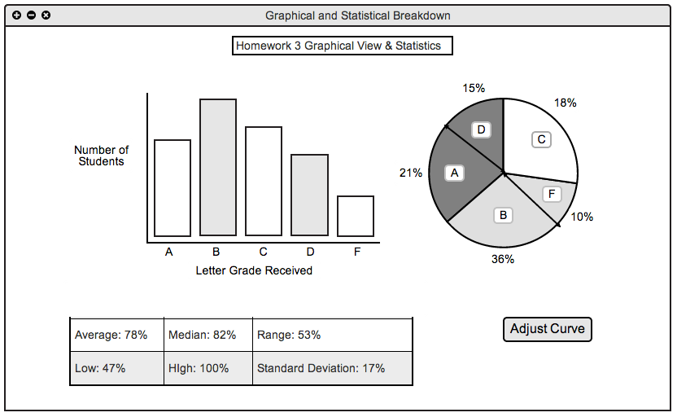
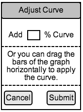

2.2.4 View Stats and Graphs
This following section demonstrates what the grader will see see when they have clicked the view stats button below an assignment column. Upon clicking that button the the screen showed below is displayed.

Stats and Graph View
At the top of the window a title is shown so the user can confirm that they are looking at the statistics and graphs for the correct assignment. Below The title are two graphs to give a visual representation of the grade distribution. On the actual tool, a line graph will substitute in for the bar chart. Below the two graphs is a grid displaying all of the different statistics for the given assignment/quiz/test. The statistics given are as follows: average, median, range, low score, high score, and standard deviation.
To the right of the statistics section is a button to adjust the curve of the given assignment/quiz/exam. When the button is clicked, the following view appears.

Curve Adjustment View
The grader will be able to manually enter a percentage (positive or negative) to adjust the curve of the assignment/quiz/exam. Also, a text box below the manual entry of the curve reminds the user that they can drag the curve of the graph in a horizontal direction to adjust the curve. Below that are two buttons, a cancel button to cancel the user's action of creating a curve, or a submit button which will save the adjusted curve and all the students grade after the curve.
Prev: ui-overview
| Next: browsing
| Up: functional
| Top: index